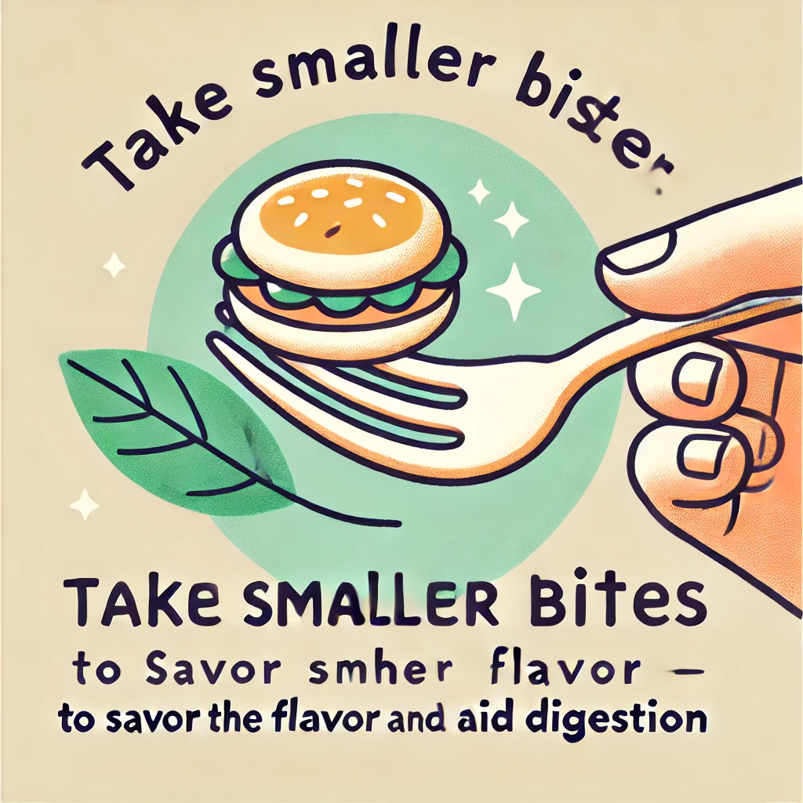

Healthy Eating Guide
Adjusting Your Eating Habits
1. Use Mindful Eating Strategies

Practice mindful eating to savor your meals and control how much you eat. Pay attention to your food and eliminate distractions while eating.
- Turn off the TV and put away your phone.
- Chew slowly and enjoy each bite.

Eat Until You're 80% Full
Practice mindful eating by stopping when you are 80% full, to avoid overeating and aid digestion.

Savor Each Bite
Chew your food thoroughly and savor each bite to enhance digestion and enjoy the flavors fully.

Sit Down and Focus
Sit down at the table and eat without distractions like TV or mobile phones to be fully present during meals.

Take Smaller Bites
Take smaller bites to better savor the flavor and make digestion easier on your body.
Maintain Good Posture
Maintain good posture while eating to aid digestion and stay focused on your meal.

Don't Talk While Eating
Focus on your food and avoid talking with your mouth full to engage fully with your meal.